簡介
爲什麼叫 WD-XL 滑油字？
「WD-XL」的名字來源於某著名品牌潤滑油，其中 WD 是原本品牌名稱的前半部，XL 除了是原產品的羅馬數字以外，也代表這個字型的目標。「滑油字」則就只是……又滑又油的字？
爲什麼要做這個字型？原版字型不好嗎？
WD-XL 滑油字 是基於 站酷慶科黃油體 的字型進行繁體（正體）字補字，並且修整了標點符號及增加了中文排版所需要的符號（如漢語拼音及注音符號）。此外，本字型也改進了原字型的許多問題：

Google Fonts 上原字型的介紹如下：

但是如果詳細查看，部分漢字其實並沒有 45° 右下斜角。本字型已經統一了此特徵，讓全部漢字視覺效果一致：

WD-XL 滑油字 的西文部分也經過檢查修整，確保其更適合西文排版。

額……我覺得讓原作者改了就可以了啊。
原字型已經數年未更新。WD-XL 滑油字 除了修改問題以外，也聆聽了繁體（正體）中文排版界的需求，爲繁體（正體）中文排版進行了修改增刪，製作了 WD-XL 黄油体 TC 版本。TC 版依据更適合印刷的傳承字形進行參考及修改以匹配原字型風格。

嗯……還不錯。
WD-XL 滑油字 還製作了注音符號、白話字、臺羅拼音、漢語拼音的符號呢！你可以用這個字型來製作專業排版了！
| ㄓㄨˋ ㄧㄣ | Pe̍h-ōe-jī |
| Tâi-lô | Hànyǔ pīnyīn |
就這樣？
未來 WD-XL 滑油字 將會嘗試更多 OpenType 功能，敬請期待！
我需要付費嗎？
不需要！WD-XL 滑油字 繼承了 Google Fonts 版本站酷慶科黃油體的《SIL 開源字型授權》 (SIL Open Font License)，完全開源免費商用！詳細授權請參考隨附本字型的授權文件（繁中譯版參考）。
這些不同的字型版本是什麽？
WD-XL 滑油字 提供了四种地域字型，卽 SC、TC、JPS 和 JPN。SC 是簡體中文字形，TC 是繁體（正體）中文字形，JPS 和 JPN 皆是日文字形（日文版目前是測試性質，但是這個字型本來就是測試用途啊～）。JPS 與 Adobe Std (JIS X 0208:1990) 字形相似，JPN 則與 Adobe StdN (JIS X 0213:2004) 字形相似。
我要怎樣用這款字型呢？
請前往 GitHub 下載 WD-XL 滑油字 後安裝即可。
立即下載 >
OpenType 功能
WD-XL 滑油字 已經爲日常排版配置了多項 OpenType 功能；一起來看看吧！
簡化設計：ss01
首先，最簡單的東西開始：整修這奇葩的 X。（選擇性哦）
西文標點符號：ss18
然後：中文標點符號（多數）一般上佔一個漢字寬度，且置放中間，但西文標點一般是比例寬度（即根据字形寬度變化），因此影響了部分標點符號的顯示使用。本字型在這裏嘗試一項功能：將 ss18 設置爲西文標點，軟體設置時自動替換全部相關字符。目前在此功能內置放了省略號和間隔號（U+002D MIDDLE DOT）、引號，以及部分音標。
中文標點符號：ss19/ss20
即使同樣是中文使用者，我們也把標點符號寫在不同的位置。簡體中文使用者多數將標點符號置放在左下角，而多數繁體（正體）使用者則將標點符號寫在正中間。因此，本字型在 ss19 及 ss20 設置了不同的標點符號，讓使用者可以自由選擇。
ss19：簡體中文標點符號（置左下）。
ss20：繁體（正體）中文標點符號（置中）。
這些選項也會改變部分 ss18 調整的標點符號，例如間隔號及省略號。ss20（繁中標點）內也設置調整注音符號的音調大小以適配注音符號。
標點符號：變體選擇器
Unicode 近年也爲中文標點符號特別設置變體選擇器（Variation Selectors，VS），讓文本本體可以指定應該顯示的字形。此功能並不屬於 OpenType，但是因爲其功能相似所以這邊也簡單介紹。使用變體選擇器的方法是在標點符號後面加上 Unicode 指定的變體選擇符。下面的示例皆標籤爲英文且關閉全部 OpenType 功能，VS01 行的每個標點符號後面緊隨 U+FE00，而 VS02 行的每個標點符號後面緊隨 U+FE01。
| VS01 |
、︀。︀！︀，︀．︀：︀；︀？︀“︀你們‘︀好嗎’︀”︀ |
| VS02 |
、︁。︁！︁，︁．︁：︁；︁？︁“︁你們‘︁好嗎’︁”︁ |
拼音系統：ccmp/dlig
好啦，來認真了。臺羅拼音、白話字及漢語拼音皆用到了帶標的拉丁字母，其中臺羅拼音跟白話字都用了一些未編碼的字符，因此本字型使用了 ccmp 來進行動態組字。此功能一般編輯軟體會自動開啓，使用者無需擔心。
| a̍ | Ô͘ | m̋ | n̄ | ú | È | Ň | ĭ |
| Ĕ | u̍ | ê | ő | Ī | Ḿ | Ù | Ǎ |
| ǒ | ĕ | i̍ | ô͘ | Ő | ū | ń | m̀ |
| ǘ | Ň | Ề | Ǖ | Ŝ | ü | ẑ | ŋ |
示例文字裏面最後一排文字是漢語拼音專用標音，而第一至三排皆是臺羅拼音/白話字共用字符。有注意最後一排混了個不速之客嗎？
其實 ŋ 並不在 ccmp 功能內。ŋ 實際上在漢語拼音裏是 ng 的縮寫[來源]，因此不像上面的一個字母加一個組合附加音標。然而，ng 也無法貿然加入 liga 內，否則其他語言啓動 liga 時也會受到影響。因此，本字型將 ng/NG 連字縮寫置放於 discretionary ligatures⸺選擇性連字內，讓使用者仍可輕易使用此連字，但是其他語言（如英語 -ing 詞匯）不會受到影響。ẑ，ĉ，ŝ 分別是 zh，ch，sh 的簡寫，因爲上述理由而同樣設置於 dlig 內。此功能也需要使用者手動選擇。
| TÍNG Zhǎngdà | > | TÍNG Zhǎngdà |
標點符號⸺破折號：ccmp
中文破折號應當佔兩個漢字寬度，並且顯示成連貫的一條橫綫，但是破折號一般上左右會有一些留白以避免跟文字打架。在 2.001 版及以前的版本，調用破折號的方式是透過使用 OpenType liga 連字功能將兩、三個單獨的破折號（U+2014 EM DASH）替換成一個聯合的字形（U+2E3A TWO-EM DASH/U+2E3B THREE-EM DASH），但是在豎排時會出現間隔問題；此方法也無法處理無限長的破折號。2.100 版起，破折號轉爲使用 ccmp 來無限延伸。此功能默認開啓，使用者不需要修改當前文件即可享用最新的修改，但需注意盡量避免在符號之間加間距，否則仍會斷開。
（看到上面五倍長的破折號中間的第三、四個連起嗎？這個才是正確的中文破折號⸺U+2E3A。如果輸入不來，仍舊可以使用兩個 U+2014 代替。）
標點擠壓：chws/vchw
專業中文排版會特別針對相連中文標點符號進行擠壓，減少標點符號之間的空間讓文本顯得更加緊湊。本字體在 2.100 版加入了 OpenType 的新功能 chws 及 vchw，讓使用者可以選擇是否擠壓標點符號。chws 爲橫排標點擠壓，vchw 爲豎排標點擠壓。標點擠壓目前僅限於置左下式的標點（如簡體中文和日文的逗句號）及括號；置中標點符號（如間隔號和繁體中文的逗句號）暫不擠壓。
此功能在鉻系（Chromium 系）流覽器 123 版起默認開啟，使用者不需要修改已有文件就能讓文本看起來更加密佈。
| 說：“你呢？” |
> |
說：“你呢？” |
| 論）、《文》。 |
> |
論）、《文》。 |
半寬標點：halt/vhal
爲了方便進行標點擠壓，字體已經設置了標點符號的半寬距離。該半寬標點符號的度量也單獨放置在 OpenType halt（橫排）/vhal（豎排） 功能內，也另外給 chws/vchw 不擠壓的置中標點符號設置了半寬寬度。此功能會影響全部中文標點符號，請優先使用 chws/vchw 的標點擠壓功能。
| 說：“你呢？” |
> |
說：“你呢？” |
| 論）、《文》。 |
> |
論）、《文》。 |
文字切換：smpl/trad
作爲原本是一款業餘時間製作的字型，本人也順便在 WD-XL 滑油体 上測試了一些 OpenType 技術。這裏介紹的功能是繁簡字形轉換，讓字型可以自動把一對一的字符直接進行繁簡轉換（如 語-语），而一對多的字符則會提供使用者手動選擇。smpl (simplified forms) 將會把繁體（正體）轉簡體，trad (traditional forms) 則將會把簡體轉繁體（正體）。
此功能僅可在Adobe軟件和瀏覽器內使用。下一章節可以測試該功能在瀏覽器的使用方式。
字形切換：locl
本字型在 2.000 版中正式加入 TrueType 集合字型 （TTC），將簡中與繁中版本字型合併成一個字型文件。合併后的字型不只減少了文件大小，也擁有了切換地域字形的功能，能夠符合簡中和繁中的不同字形。只需要在軟體內設定語言，字符的字形就會匹配地域字形。上面 ss18、ss19 及 ss20 替換的標點符號也會隨語言切換形態
| 簡中 |
繁中 |
給别開青面，
致敬勇敢體。 |
給别開青面，
致敬勇敢體。 |
此功能可在部分軟體使用（支援標注語言的軟體多數可使用），默認爲自動開啓。下一章節也可以測試該功能在瀏覽器的使用方式。
綜合選擇：aalt
最後，爲了方便使用者使用上述功能，因此本字型將以上全部（除了 liga 及 dlig）功能設置於 access all alternates 所有替代形式內，在可使用 aalt 的軟體內可以選擇上面的替代字形。
另外，還有個小彩蛋，你有發現嗎？（看看liga功能吧！）